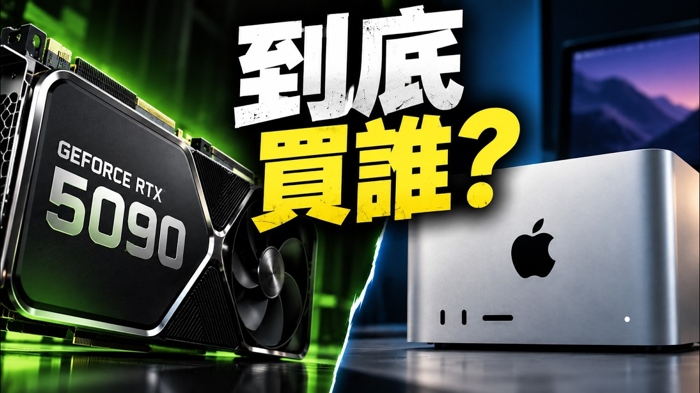

隨著開源語言、圖片及影音生成模型快速發展，愈來愈多使用者有意將 AI 模型部署於本地電腦。本影片深入探討如何選購適合本地 AI 的電腦，涵蓋 NVIDIA、AMD 及 Apple 等平臺的比較。

本次報告的最大重點，在於顛覆傳統遊戲電腦選購時先看顯示卡速度的思維。AI 模型若要順暢執行，首先必須能被完整載入顯示記憶體（VRAM）。若模型與相關工作流程所需記憶體超過 VRAM 容量，即使顯示卡算力再強，使用者仍須妥協。
24GB VRAM 適合作為全用途起點，自該容量起，語言模型、程式編寫 Agent、圖片生成乃至部分影音生成工作流較能避免反覆調整配置的困擾。
1. VRAM 容量決定模型能否順利載入，24GB 為全用途起點
2. NVIDIA CUDA 軟體生態最成熟，新模型優先支援
3. Apple 統一記憶體適合大型語言模型
4. 影音生成對 VRAM 要求更高，16GB 需量化犧牲品質
5. 系統 RAM 至少 64GB，SSD 容量需充裕
| 平臺 | NVIDIA RTX | AMD ROCm | Apple M 系列 |
|---|---|---|---|
| VRAM 容量 | 24-32GB（3090/4090/5090） | 16-24GB | 最高 192GB（共享記憶體） |
| 軟體生態 | ⭐⭐⭐⭐⭐ CUDA 最成熟 | ⭐⭐⭐ 支援漸趨完整 | ⭐⭐⭐ Metal 生態落後 |
| 適合用途 | 全功能、AI 開發首選 | 預算導向、需主動確認相容性 | 大型語言模型、文字生成 |
| 影音生成 | ⭐⭐⭐⭐⭐ 完全支援 | ⭐⭐⭐ 部分支援 | ⭐⭐ 適配落後 |
至少 24GB VRAM（如 RTX 3090/4090），新一代 RTX 5090 達 32GB，額外容量對長上下文有顯著助益。
建議 64GB RAM，以容納瀏覽器、IDE、Agent 等多工負載，並提供模型 offload 所需空間。
大容量 SSD（1TB+），因模型動輒數十 GB 且會持續累積，需充裕空間加快初始載入速度。
NVIDIA CUDA 生態最完整，多數新模型與工具優先支援；AMD ROCm 需主動確認相容性。
影音生成工作流對 VRAM 的需求更加嚴苛：
主要為語言模型？圖片生成？還是影音生成？用途決定硬體需求。
語言模型为主：16-24GB 即可；需涵蓋影音生成：24GB 起跳。
追求全功能首選 NVIDIA；預算導向可考慮 AMD；大型語言模型可選 Apple。
64GB+ 系統 RAM、1TB+ SSD，確保多工與模型存放無後顧之憂。
消費級 GPU 記憶體容量持續提升，量化技術不斷優化，本地 AI 部署門檻將持續下降。
「影響本地 AI 體驗的關鍵並非單純顯示卡運算速度，而是顯示記憶體（VRAM）容量是否足夠承載模型與相關工作流程。」
── 本地 AI 電腦購買指南核心觀點短期內 NVIDIA 因 CUDA 生態成熟與新模型快速支援，仍將是追求全功能使用者的首選；AMD 若能持續完善 ROCm 相容性並維持價格優勢，有機會吸引預算導向使用者。Apple 則在高容量共享記憶體的大型語言模型部署上具獨特利基。長期而言，消費級 GPU 記憶體容量提升與量化技術最佳化，將使本地 AI 部署門檻持續下降。
本次摘要由 AI News 編輯團隊整理，內容基於 YouTube 影片字幕。